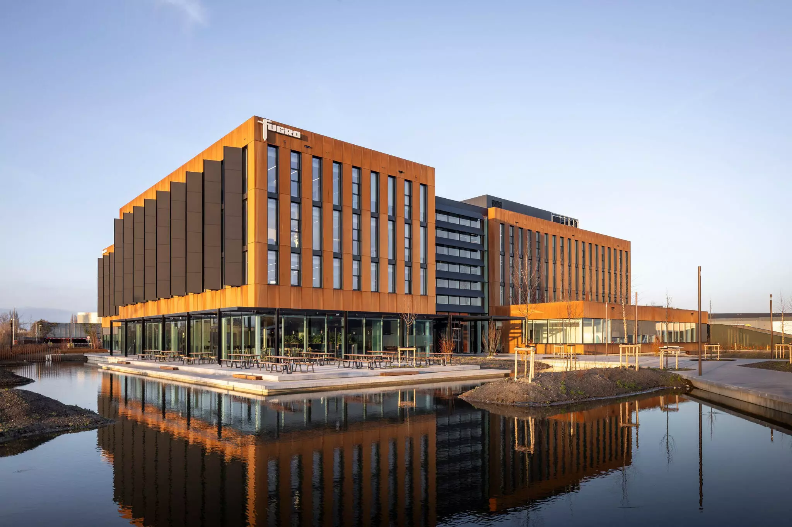

Fugro Survey B.V.
Nootdorp, the Netherlands
1 August - 1 October 2026

Description of my tasks
1-7 AugustRig move
The objective was to configure the sensors and solutions to position the Les Hat jack-up rig next to the ASDA platform. I used Navsim to simulate the sensor data and the rig’s movement. The final fix report was generated once the rig move was completed.
10-18 AugustSurvey statistics and StarPack data visualization
I processed logged GNSS data from different StarPack positioning algorithms using Excel. The supplied reference point was used to derive horizontal and 3D position errors. The results were summarized using standard deviation and RMSE, with the position errors visualized in scatter plots.
10-18 AugustUSBL calibration
I configured the Starfix project and selected Extended Cardinal Point as the calibration method. Navsim was used to simulate the survey data. I compared the scatter plots before and after calibration and applied the correction values. The USBL calibration report was generated as the final output.
19-21 AugustQuickVision camera training
I supported the training of the offshore crew after being lectured about the QuickVision camera. My first duty was to present the camera and its benefits. In the practical part, I connected the devices explained during the presentation.
24 AugustGeophysical survey training
I was introduced to seismic reflection and refraction surveys, together with the instruments used for them. During the workshop visit, I was shown damaged equipment and the causes of its breakdowns.
25 AugustStarPack data processing
I downloaded the logged StarPack data and used SPEXPORT to extract the GNSS records from eight .spm files. The resulting .rt27 file was converted to RINEX using Trimble Convert to RINEX. I uploaded the RINEX file to CSRS-PPP to derive the final PPP positions.
26-28 AugustRTK stability testing
My mentor and I tested the Septentrio GNSS receiver’s position stability and CPU load at different output frequencies. RxControl was used to configure the receivers and adjust their output. The position records remained stable, but the CPU load reached 100% at 100 Hz. We therefore selected a 50 Hz output, which resulted in approximately 70% CPU load.
1-2 SeptemberPHINS calibration preparation
I physically connected the sensors and configured them using their designated software. I set up the DVL parameters in BBTALK and used the PHINS web interface to define input/output ports and lever arms. The final step was to integrate the sensors in Starfix and validate the configuration, with the heading standard deviation below 0.1 degrees.
7-10 SeptemberDynamic calibration
The objective was to calculate C-O (Computed-Observed) corrections for Octans measurements. I used GrafNav to derive the baselines between the GNSS antennas and imported them into Excel together with their offsets from the CRP. The computed results and observed Octans values were checked in VBAProc, which is part of the Starfix suite. I submitted the generated report as a benchmark for testing Fugro’s software that automates this process.
11 SeptemberUSBL calibration report QC
I was shown how to thoroughly validate USBL calibration reports and which parameters require extra care. Several reports were compared systematically so I could understand the QC process more easily.
14-25 SeptemberMBES processing
I processed the MBES data in EIVA’s NaviEdit and generated DTMs with 0.25 and 0.1 m resolutions in NaviModel. The DTMs combined all surveying blocks. I used the S-Scan automated cleaning tool and Point Editor for possible manual corrections. The processed data were exported as .xyz files and GeoTIFF images.
28 September - 1 OctoberBathymetric charts
The objective was to create three bathymetric charts for a wind farm in the North Sea near the English shore. I used ArcGIS Pro’s Map Series to automate the process, as the original project required 95 charts. The layout’s information was edited using dynamic text. I did not manage to complete the keyplan overview and detail maps before my internship finished.